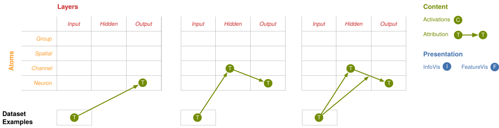

随着神经网络日益成功，我们也越来越需要能够解释它们的决策——包括建立对其在现实世界中行为方式的信心、检测模型偏差，以及出于科学好奇心。 为此，我们既需要构建深度抽象，也需要将它们具体化（或实例化）在丰富的交互界面中 [(Nielsen, 2016)]。 除了少数例外 [(Olah, 2015; Yosinski et al., 2015; Carter et al., 2017)]，现有的可解释性工作未能将这两者结合起来。
机器学习社区主要致力于开发强大的方法，例如 [(Erhan et al., 2009; Olah et al., 2017; Simonyan et al., 2013; Nguyen et al., 2015; Mordvintsev et al., 2015; Nguyen et al., 2016)]、归因 [(Simonyan et al., 2013; Zeiler et al., 2014; Springenberg et al., 2014; Selvaraju et al., 2016; Fong et al., 2017; Kindermans et al., 2017; Kindermans et al., 2017; Sundararajan et al., 2017)] 和降维 [(Maaten et al., 2008)]，用于理解神经网络。 然而，这些技术一直被作为孤立的研究线索来研究，而将它们具体化的相关工作却被忽视了。 另一方面，人机交互社区已经开始探索神经网络的丰富用户界面 [(Strobelt et al., 2018; Kahng et al., 2018; Bilal et al., 2018)]，但它们尚未深入参与这些抽象。 在使用这些抽象的程度上，也主要是以相当标准的方式。 结果，我们得到的只是贫乏的界面（例如显著性图或关联抽象神经元），错失了许多价值。 更糟糕的是，许多可解释性技术尚未完全发展成为抽象，因为缺乏使其具有通用性和可组合性的压力。特征可视化
在本文中，我们将现有的可解释性方法视为构建丰富用户界面的基本且可组合的构建块。 我们发现这些看似不同的技术现在融合成了一种统一的语法，在最终的界面中扮演互补的角色。 此外，这种语法使我们能够系统地探索可解释性界面的设计空间，从而评估它们是否达到了特定目标。 我们将展示一些界面，它们能在保持信息量处于人类可处理规模的同时，展示网络检测到了什么，并解释它如何形成自己的理解。 例如，我们会看到一个正在观察拉布拉多猎犬的网络如何检测到下垂的耳朵，以及这如何影响它的分类结果。
我们的界面是推测性的，有人可能会质疑它们的可靠性。 我们没有零散地讨论这一点，而是在文章末尾专门用一节来阐述。
在本文中，我们使用 GoogLeNet[(Szegedy et al., 2015)]（一个图像分类模型）来演示我们的界面想法，因为它的神经元似乎异常具有语义意义。[1] 虽然这里我们对任务和网络做出了特定选择，但我们所呈现的基本抽象及其组合模式，可以应用于其他领域的神经网络。
理解隐藏层
最近许多关于可解释性的工作都关注神经网络的输入层和输出层。 可以说，这种关注是因为这些层具有明确的含义：在计算机视觉中，输入层表示输入图像每个像素的红、绿、蓝颜色通道值，而输出层则由类别标签及其关联概率组成。
然而，神经网络的强大之处在于它的隐藏层——在每一层，网络都会发现输入的一种新表示。 在计算机视觉中，我们使用的神经网络会在图像的每个位置运行相同的特征检测器。 我们可以将每一层学到的表示想象成一个三维立方体。立方体中的每个单元格都是一个激活值，即神经元触发的强度。 x 轴和 y 轴对应图像中的位置，z 轴则是正在运行的通道（或检测器）。
为了构建语义字典，我们将每个神经元激活与其对应的特征可视化配对，并按激活强度排序。 这种激活与特征可视化的结合，改变了我们与底层数学对象之间的关系。 激活现在映射到具有标志性的表示，而不是抽象的索引，其中许多看起来类似于人类显著的概念，例如“下垂的耳朵”、“狗鼻子”或“皮毛”。
我们使用基于优化的特征可视化
[(Olah et al., 2017)]
以避免虚假相关，但也可以使用其他方法。
语义字典之所以强大，不仅因为它摆脱了无意义的索引，还因为它用典型示例来表达神经网络学到的抽象。 在图像分类任务中，神经网络学习了一组视觉抽象，因此图像是表示它们最自然的符号。 如果我们处理的是音频，那么更自然的符号很可能就是音频片段。 这很重要，因为当神经元似乎对应人类概念时，人们很容易将其简化为文字。 然而，这样做是一种有损操作——即使是熟悉的抽象，网络也可能学到了更深层的细微差别。 例如，GoogLeNet 有多个下垂耳朵检测器，它们似乎能检测到略有不同的下垂程度、长度以及耳朵周围的上下文。 此外，还可能存在我们在视觉上熟悉、却缺乏良好自然语言描述的抽象：比如阳光照在波光粼粼水面上的那道特定光柱。 更进一步，网络可能学会了我们完全陌生的抽象——这时自然语言将彻底失效！ 总体而言，对于神经网络学到的那些“外来”抽象，典型示例是一种比人类原生语言更自然的表示方式。
通过为隐藏层赋予意义，语义字典为我们现有的可解释性技术成为可组合的构建块奠定了基础。 正如我们将看到的，就像它们底层的向量一样，我们也可以对其应用降维。 在其他情况下，语义字典允许我们进一步拓展这些技术。 例如，除了我们目前在输入层和输出层进行单向归因之外，语义字典还允许我们对特定隐藏层进行双向归因。 原则上，这项工作可以在没有语义字典的情况下完成，但结果的含义将难以理解。
虽然我们是针对神经元引入语义字典的，但它们可以与任何激活基一起使用。我们将在后续进一步探讨这一点。
网络看到了什么？
将这种技术应用于所有激活向量，不仅能让我们看到网络在每个位置检测到了什么，还能看到网络对整个输入图像的整体理解。
而且，通过在多层之间（例如 “mixed3a”、“mixed4d”）进行观察，我们可以观察到网络的理解如何演变：从早期层检测边缘，到后续层检测更复杂的形状和物体部件。
然而，这些可视化省略了一个关键信息：激活的强度。 通过将每个单元格的面积按激活向量的强度缩放，我们就能表明网络在该位置检测特征的强烈程度：
概念是如何组合的？
特征可视化帮助我们回答网络检测到了什么，但它无法回答网络如何将这些单个片段组合起来得出后续决策，或者为什么做出这些决策。
归因是一系列技术，通过解释神经元之间的关系来回答这些问题。 目前存在多种归因方法 [(Simonyan et al., 2013; Zeiler et al., 2014; Springenberg et al., 2014; Selvaraju et al., 2016; Fong et al., 2017; Kindermans et al., 2017; Sundararajan et al., 2017)]，但似乎还没有一个明确正确的答案。 事实上，有理由认为我们目前的所有答案都不完全正确 [(Kindermans et al., 2017)]。 我们认为归因方法还有大量重要的研究工作要做，但就本文而言，采用哪种具体的归因方法并不重要。 我们使用了一种相当简单的方法，即线性近似关系[2]，但也可以轻松替换为几乎任何其他技术。 未来对归因方法的改进，自然也会相应地改进建立在其上的界面。
使用显著性图进行空间归因
最常见的归因界面称为显著性图——一种简单的热力图，突出显示输入图像中对输出分类贡献最大的像素。 我们认为当前这种方法存在两个弱点。
首先，单个像素是否应该是归因的主要单位，这一点并不明确。 每个像素的含义与其他像素高度纠缠，对简单的视觉变换（例如亮度、对比度等）不鲁棒，并且与输出类别这样的高层概念相距甚远。 其次，传统的显著性图是一种非常有限的界面类型——它们一次只能显示单个类别的归因，并且不允许你更深入地探查单个点。 由于它们没有明确处理隐藏层，因此很难充分探索它们的设计空间。
我们转而将归因视为另一个用户界面构建块，并将其应用于神经网络的隐藏层。 这样做改变了我们可以提出的问题。 我们不再询问某个特定像素的颜色是否对“拉布拉多猎犬”分类很重要，而是询问该位置检测到的高层概念（例如“下垂的耳朵”）是否重要。 这种方法类似于类别激活映射 (CAM) 方法 [(Zhou et al., 2016; Selvaraju et al., 2016)] 的做法，但由于它们将结果解释回输入图像，因此错失了用网络隐藏层丰富行为来进行沟通的机会。
上述界面为我们提供了与归因更灵活的关系。 首先，我们对显示的每个隐藏层的每个空间位置进行归因，得到对应全部 1000 个输出类别的结果。 为了可视化这个千维向量，我们使用降维技术生成多方向显著性图。 将这些显著性图叠加在按强度缩放的激活网格上，为归因空间提供了一种信息线索 [(Pirolli et al., 1999)]。 激活网格使我们能够将归因锚定在我们语义字典首先建立的视觉词汇上。 鼠标悬停时，我们会更新图例，显示对输出类别的归因（即这个空间位置最有助于哪些类别？）。
最有趣的是，这个界面允许我们在隐藏层之间进行交互式归因。 鼠标悬停时，额外的显著性图会遮罩隐藏层，在某种意义上为它们的黑箱照进一束光。 这种层到层的归因，是仔细考虑界面设计如何推动我们现有可解释性抽象泛化的一个典型例子。
通过这个图，我们已经开始用更高层的概念来思考归因。 然而，在特定位置，许多概念是同时被检测到的，这个界面很难将它们分开。 由于继续关注空间位置，这些概念仍然是纠缠在一起的。
通道归因
显著性图通过对隐藏层的空间位置应用归因，隐式地对我们的激活立方体进行了切片。 这聚合了所有通道，结果是我们无法分辨每个位置上哪些特定检测器对最终输出分类贡献最大。
另一种切片立方体的方式是按通道而非空间位置。 这样做允许我们进行通道归因：每个检测器对最终输出贡献了多少？ （这种方法与 Kim 等人几乎同时的工作 [(Kim et al., 2017)] 类似，他们对学习的通道组合进行归因。）
这个图与我们之前看到的那个类似：我们进行层到层的归因，但这次是针对通道而不是空间位置。 我们再次使用语义字典中的图标来表示对最终输出分类贡献最大的那些通道。 将鼠标悬停在单个通道上，会显示其激活的热力图叠加在输入图像上。 图例也会更新，显示它对输出类别的归因（即这个通道最支持哪些类别？）。 点击一个通道可以让我们深入查看层到层的归因，找出较低层中贡献最大的通道以及较高层中最受支持的通道。
虽然这些图重点关注层到层的归因，但聚焦于单个隐藏层仍然很有价值。 例如，引导图允许我们评估为什么一个类别比另一个类别更成功。
对空间位置和通道的归因可以揭示模型的强大信息，尤其是当我们将两者结合起来时。 不幸的是，这类方法面临两个重大问题。 一方面，很容易产生压倒性的大量信息：要理解那些对输出有轻微影响的长尾通道，可能需要人类审计数小时。 另一方面，我们探索的这两种聚合方式都极具信息损失，可能会遗漏故事的重要部分。 虽然我们可以通过处理单个神经元、完全不进行聚合来避免有损聚合，但这会以组合爆炸的方式加剧第一个问题。
让事物保持人类可处理的规模
在前面的章节中，我们考虑了三种切分激活立方体的方式：空间激活、通道和单个神经元。 每一种都有重大缺点。 如果只使用空间激活或通道，就会错过故事中非常重要的部分。 例如，知道下垂耳朵检测器帮助我们将图像分类为拉布拉多猎犬很有趣，但当它与触发该检测器的位置结合起来时，就有趣得多了。 人们可以尝试深入到神经元层面来讲述完整的故事，但数以万计的神经元信息量实在太大。 即使是数百个通道，在被拆分成单个神经元之前，展示给用户也可能令人难以承受！
如果我们想要构建有用的神经网络界面，光让事物有意义是不够的。 我们需要让它们保持在人类可处理的规模，而不是信息过载。 实现这一点的关键是找到更有意义的激活分解方式。 有充分理由相信这样的分解是存在的。 通常，许多通道或空间位置会以高度相关的方式协同工作，将它们视为一个单元最为有用。 其他通道或位置活动很弱，在高层概览中可以忽略。 因此，如果我们有合适的工具，似乎就应该能够找到更好的分解方式。
有一个叫做矩阵分解的完整研究领域，专门研究分解矩阵的最优策略。 通过将我们的立方体展平为空间位置和通道组成的矩阵，我们就可以应用这些技术来获得更有意义的神经元分组。 这些分组不会像我们之前看到的自然分组那样与立方体自然对齐。 相反，它们将是空间位置和通道的组合。 此外，这些分组是针对特定图像构建的，用于解释网络在该图像上的行为。 在另一张图像上复用相同的分组不会有效；每张图像都需要计算一组独特的分组。
这种分解产生的分组将成为用户交互界面的原子。不幸的是，任何分组本质上都是在将事物缩减到人类规模与因为聚合有损而保留信息之间做出权衡。矩阵分解让我们可以选择分组优化的目标，从而比之前看到的自然分组获得更好的权衡。
用户界面的目标应该影响我们优化矩阵分解时优先考虑什么。例如，如果我们想优先展示网络检测到了什么，就希望分解能完整描述激活；如果我们想优先考虑什么会改变网络的行为，就希望分解能完整描述梯度；如果我们想优先考虑什么导致了当前行为，就希望分解能完整描述归因。当然，我们可以在三者之间取得平衡，而不是只优化其中一个而排除其他。
在下面的图中，我们通过对激活进行非负矩阵分解 [3][4] 构建了优先考虑激活的分组。 注意，数量庞大的神经元已被缩减为一小组分组，简洁地总结了神经网络的故事。
这个图只关注单个层，但正如我们之前看到的，跨多层观察以理解神经网络如何将低层检测器组合成高层概念会很有帮助。
我们之前构建的分组是针对理解单个层而优化的，与其他层无关。为了同时理解多个层，我们希望每一层的分解都是“兼容的”——即早期层的分组能自然地组合成后期层的分组。这也是我们可以针对分解进行优化的目标 [5]。
在本节中，我们认识到如何分解激活立方体是一个重要的界面决策。我们没有满足于激活立方体的自然切片，而是构建了更优的神经元分组。这些改进的分组既更有意义，也更符合人类规模，使用户理解网络行为时不再那么繁琐。
我们的可视化只是刚刚开始探索替代基在为理解神经网络提供更好原子方面的潜力。 例如，虽然我们专注于创建更少的方向来解释单个示例，但最近出现了寻找“全局”有意义方向的令人兴奋的工作 [(Raghu et al., 2017; Kim et al., 2017; Fong et al., 2018)]——这样的基在同时理解多个示例或比较模型时可能特别有帮助。 [6]
可解释性界面的设计空间
本文提出的界面想法将特征可视化和归因等构建块组合在一起。 组合这些组件并不是任意的过程，而是基于界面目标的结构。 例如，界面是应该强调网络识别到了什么、优先展示其理解如何发展，还是专注于让事物保持人类规模。 为了评估这些目标并理解其中的权衡，我们需要能够系统性地考虑各种可能的替代方案。
我们可以将一个界面视为多个独立元素的联合。
每个元素使用特定的呈现风格（例如特征可视化或传统信息可视化）来显示特定类型的内容（例如激活或归因）。 这些内容位于由网络各层如何被分解为原子所定义的基底上，并且可能经过一系列操作（例如过滤或投影到另一个基底）进行变换。 例如，我们的语义字典使用特征可视化来显示隐藏层神经元的激活。
表示这种思考方式的一种方法是使用形式语法，但我们发现从视觉上思考这个空间更有帮助。 我们可以将网络的基底（显示哪些层，以及如何分解它们）表示为一个网格，将内容和呈现风格以点和连线的形式绘制在这个网格上。
这种设置给我们提供了一个框架，可以一步一步地探索可解释性界面的设计空间。 例如，让我们再次考虑引导图。 它的目标是帮助我们比较输入图像的两种潜在分类。

在本文中，我们只触及了可能性的表面。 还有大量构建块的组合有待探索，而这个设计空间为我们提供了系统地进行探索的方法。
此外，每个构建块都代表一类广泛的技术。 我们的界面只采用了一种方法，但在每一节中我们都看到，特征可视化、归因和矩阵分解都有许多替代方案。 下一个直接的步骤就是尝试使用这些替代技术，并研究改进它们的方法。
最后，这并不是完整的构建块集合；随着新的构建块被发现，它们会扩展这个空间。 例如，Koh & Liang 提出了理解数据集样本对模型行为影响的方法 [(Koh et al., 2017)]。 我们可以将数据集样本视为设计空间中的另一种基底，从而成为另一个与其他构建块完全可组合的构建块。 如此一来，我们现在可以想象这样的界面：不仅能让我们检查数据集样本对最终输出分类的影响（正如 Koh & Liang 提出的那样），还能看到样本如何影响隐藏层的特征，以及如何影响这些特征与输出之间的关系。 例如，如果我们考虑我们的“拉布拉多猎犬”图像，我们不仅能看到哪些数据集样本最影响模型得出这个分类，还能看到哪些数据集样本最导致“下垂耳朵”检测器被触发，以及哪些数据集样本最导致这些检测器提升了“拉布拉多猎犬”的分类概率。

除了用于分析模型行为的界面之外，如果我们将模型参数作为一种基底加入，这个设计空间现在就可以考虑用于对神经网络采取行动的界面。[7] 虽然今天大多数模型都是针对可以轻松描述的简单目标函数进行训练的，但我们在现实世界中希望模型做的许多事情都是微妙、细微且难以用数学精确描述的。 [8] 针对这些微妙目标训练模型的一种非常有前景的方法是从人类反馈中学习 [(Christiano et al., 2017)]。 然而，即使有人类反馈，如果模型的问题方面在人类提供反馈的训练环境中没有强烈显现出来，仍然可能难以训练模型按我们期望的方式行事。 [9] 通过可解释性界面辅助的人类对模型决策过程的反馈，可能是一个解决这些问题的强大方案。 它可能使我们不仅能训练模型做出正确的决策，还能让它们因为正确的原因做出这些决策。 （不过这里存在一个风险：我们是在优化模型使其在我们的界面中看起来是我们想要的样子——如果不小心，这可能导致模型欺骗我们！[10]）
另一个令人兴奋的可能性是用于比较多个模型的界面。 例如，我们可能想看到模型在训练过程中的演变，或者当迁移到新任务时它如何变化。 或者，我们可能想理解整个模型家族之间的相互比较。 现有的工作主要集中在比较模型的输出行为 [(Kapoor et al., 2010; Krause et al., 2016; Amershi et al., 2015)] 上，但最近的工作开始探索比较它们的内部表示 [(Bau et al., 2017)]。 这项工作的独特挑战之一在于，我们可能需要对齐每个模型的原子；如果我们有完全不同的模型，能否找到它们之间最相似的神经元？ 放大来看，我们能否开发出允许我们一次性评估大片模型空间的界面 [(Olah, 2015)]？
这些界面有多可信？
为了让可解释性界面真正有效，我们必须信任它们讲述的故事。 我们对目前使用的这套构建块感知到两个担忧。 第一，神经元在不同输入图像上是否具有相对一致的含义，以及特征可视化是否准确地将其具体化？ 语义字典以及建立在其上的界面都以这个问题为前提。 第二，归因是否有意义，我们是否信任目前已有的任何归因方法？
之前的大量研究已经发现，神经网络中的方向具有语义意义 [(Szegedy et al., 2013)]。 一个特别突出的例子是“语义算术”（例如“king” - “man” + “woman” = “queen”）[(Mikolov et al., 2013; Radford et al., 2015)]。 我们在前一篇文章中深入探讨了 GoogLeNet 的这个问题 [(Olah et al., 2017)]，发现它的许多神经元似乎对应有意义的概念。[11] 然而，除了这些神经元之外，我们也发现了许多含义不那么清晰的神经元，包括对多种显著概念混合响应的“多语义”神经元（例如同时响应“猫”和“汽车”）。 界面可以自然地对此做出回应：我们可以使用多样性可视化来揭示神经元可能具有的多种含义，或者旋转我们的语义字典，使其成分更加解耦。 当然，就像我们的模型可以被愚弄一样，构成它们的特征也可能被愚弄——包括对抗样本 [(Sabour et al., 2015)]。 在我们看来，特征不需要是完美无缺的检测器，我们仍然可以有效地将其视为这样的检测器。 事实上，识别出一个检测器何时误触发反而可能很有趣。
关于归因，最近的工作表明我们目前的许多技术是不可靠的 [(Kindermans et al., 2017)]。 人们甚至可能怀疑这个想法是否从根本上有缺陷，因为一个函数的输出可能是其输入之间非线性相互作用的结果。 这些相互作用的一种表现形式是归因具有“路径依赖性” [(Sundararajan et al., 2017)]。 对此一个自然的回应是让界面明确呈现这一信息：归因的路径依赖性有多强？ 然而，更深层的担忧是这种路径依赖性是否主导了归因。 显然，对于相邻层之间的归因，这不是问题，因为它们之间的映射是简单的（本质上是线性的）。 虽然可能存在关于相关输入的技术细节，但我们相信这里的归因是有坚实基础的。 即使对于相隔较远的层，我们的经验是，在输出端对高层特征的归因比对输入的归因要一致得多——我们认为路径依赖在这里不是主导性问题。
模型行为极为复杂，我们目前的构建块迫使我们只能展示其特定方面。 未来可解释性研究的一个重要方向将是开发能够更全面覆盖模型行为的技术。 但是，即使有了这样的改进，我们预计可信度的一个关键标志将是不会误导用户的界面。 与明确显示的信息进行交互不应导致用户隐含地对模型得出不正确的判断（我们在 Mackinlay 关于数据可视化的论述中看到了类似原则 [(Mackinlay, 1986)]）。 毫无疑问，我们在本文中呈现的界面在这方面仍有改进空间。 在机器学习和人机交互的交叉领域进行的基础研究是解决这些问题的必要条件。
信任我们的界面对于我们希望使用可解释性的许多方式至关重要。 这是因为风险可能很高（例如安全性和公平性），也因为用可解释性反馈来训练模型这类想法将我们的可解释性技术置于对抗性环境中。
结论与未来工作
与枚举算法交互存在着丰富的设计空间，我们相信与神经网络交互也存在同样丰富的空间。 要构建强大且可信的可解释性界面，我们还有大量工作要做。 但是，如果我们成功了，可解释性有望成为实现有意义的人类监督、构建公平、安全且对齐的人工智能系统的强大工具。